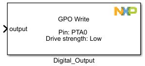
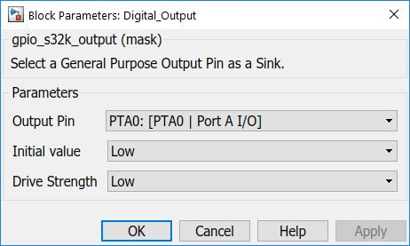

Digital Output Block
The main functionality of the block is to configure a single pin as a General Purpose output.
Block Image
Inputs:
- Output signal level (boolean)
Outputs:
- None
Parameters and Dialog Box
Output Pin
For usability the Output Pin selection is displayed as: (Port Name : [ Function : Description]) format.
Initial Value
Select the initial output level of the selected GPIO signal.
Drive Strength
Low/High drive strength is configured on the selected pin.
Block Dependency
- None
Block Miscellaneous Details
- None